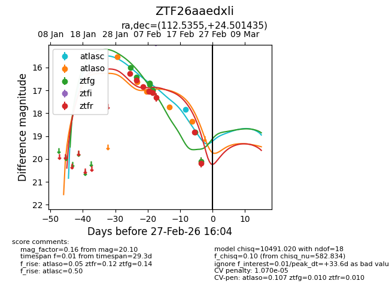
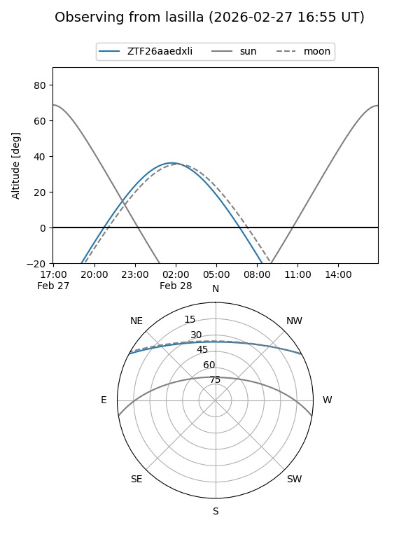
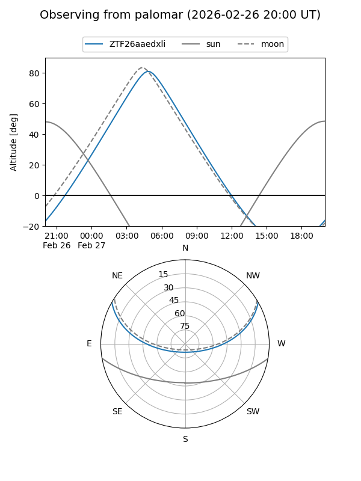
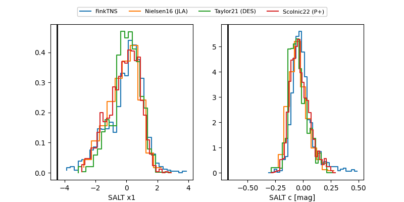

ZTF26aaedxli
Target ZTF26aaedxli at 2026-02-27 16:05
Aliases and brokers:
FINK: link
Lasair: link
ALeRCE: link
alt names
ZTF26aaedxli (ztf,fink_ztf)
Coordinates:
equatorial (ra, dec) = 112.5355,+24.50144
equatorial (HMS+DMS) = 07:30:08.51,+24:30:05.17
galactic (l, b) = (194.4768,+18.97888)
Flags:
likely cv
Photometry:
last atlasc=17.82, atlaso=18.36, ztfg=20.10, ztfr=20.18
1 atlasc, 5 atlaso, 8 ztfg, 9 ztfr detections
Lightcurve

Visibility


Additional plots
